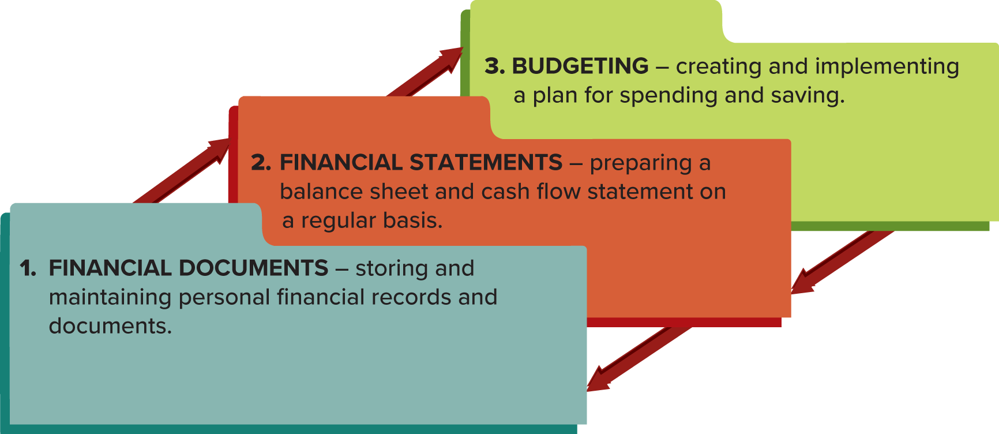

-
Money Management :the day-to-day financial activities necessary to manage current personal economic resources while working toward long-term financial security. -
Main activities of Money Management:
 - How long to store financial records?
- Permanently : Birth certificates, wills, social security data, and real estates sales/purchases.
- Investment records should be kept as long as you have said investments.
- Federal tax records should be kept for 7 years.
Finances
- The two main financial documents are the balance sheet and the cash flow statment.
-
Balance Sheet : used to report what you own(assets) and what you owe(liabilities) NOW.
- Asset types:
- Liquid assets: cash and items that can quickly be converted into cash
- Real estate
- Personal possessions: automobiles,television, jewelry, etc.
- Investmnet assets
- Liability types:
- Current liabilities: short-term payments you have to complete in full in less than a year
- Long-term liabilities: long-term payments you do not have to make in full within a year
- Asset types:
- Net worth: the difference between your total assets and your total liabilities
Cash Flow Statement : used to report how cash flows in/out of your hands over a period of time(month, year, etc.).
- Income - the inflows of cash for an individual or a family
- Gross income: pre-tax income
- Take-home pay/ net pay/ disposable income: after-tax income
- Discretionary income: money left over after paying for housing, food, and other neccessities
- Inflow sources: salary, savings, investments, grants, government benefits, etc.
- Outflow sources: fixed expenses and variable expenses
- Fixed expenses: what you pay consistently month-to-month (rent, internet costs)
- Variable expenses: inconsistent sources of costs month-to-month (clothes, dining, etc.)
- Credit card usage is NOT counted in cash outflow unless it is a direct payment to the credit card